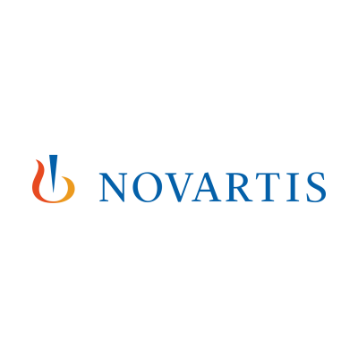
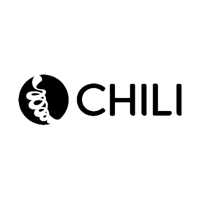
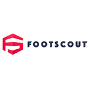

<section id="customers">
  <div class="container">
    <figure>
      
    </figure>
    <h2>Our latest customers</h2>
    <p>Skillbill's Client is usually a large (even multinational) or medium-large company, most often with a strong technological focus. We favour long-term relationships with our clients, including the transfer of our skills as part of the service.</p>
    <p>These are some of the clients we work with to achieve their goals. For us, our clients are partners and our goal is to achieve measurable results.</p>

    <div class="customers-container">
      <a href="https://www.sky.it" target="_blank" rel="noopener noreferrer">
        
        <div>
          <h3>Sky Italia</h3>
          <p>We developed and now we manage an internal system for the broadband quality team. This is in charge to analyze in realtime and in batch mode the metrics of the broadband and voice service provided by Sky in Italy.</p>
        </div>
      </a>
      <a href="https://www.fastweb.it" target="_blank" rel="noopener noreferrer">
        
        <div>
          <h3>Fastweb</h3>
          <p>We took care of Fastweb TV, both in the part related to STB Middleware and to the construction of the RaiClick portal.<br>
            In the operations area, we developed TaglioCavo and Inventory, respectively: a tool for real-time monitoring of services on fibres in the field and an integrated management system for tracking all the operator's equipment.</p>
        </div>
      </a>
      <a href="https://www.novartis.com/" target="_blank" rel="noopener noreferrer">
        
        <div>
          <h3>Novartis</h3>
          <p>We took care of the development of intranet and extranet projects concerning portals dedicated to the drug representatives chain, who are provided with all the necessary information tools, both physical and applicative, functional to the promotion of pharmaceutical products.</p>
        </div>
      </a>
      <a href="https://www.messagenet.com" target="_blank" rel="noopener noreferrer">
        
        <div>
          <h3>Messagenet</h3>
          <p>We have been working with this small Telco for over 10 years, and have developed a relationship of mutual trust, always integrating with the in-house technical team. The rapid technological evolution has allowed both companies to stay up-to-date in the voip field.</p>
        </div>
      </a>
      <a href="https://it.chili.com/" target="_blank" rel="noopener noreferrer">
        
        <div>
          <h3>Chili TV</h3>
          <p>The work done for CHILI focused on the development of the beckend and E-commerce platform of the OTT TVoD solution with a huge catalogue and supporting DRM and CDN. We shared initial development goals with Chili TV, as technical and management partners, and also planned the growth roadmap.</p>
        </div>
      </a>
      <a href="https://www.bmc.com" target="_blank" rel="noopener noreferrer">
        
        <div>
          <h3>BMC</h3>
          <p>We have worked with the BMC TrueSight Capacity Optimization product development team from its earliest versions. The customer continues to benefit from our collaboration, particularly in the product roadmap, we deal with particular technological innovations or critical releases.</p>
        </div>
      </a>
      <a href="https://www.realmadrid.com/en/news/2017/07/real-madrid-launch-real-madrid-footscout" target="_blank" rel="noopener noreferrer">
        
        <div>
          <h3>RealMadrid Footscout</h3>
          <p>We made an app for Europe's most successful football club. Footscout app is a video football platform to gives Madrid fans the opportunity to share their football skills with the world and scout other football players!</p>
        </div>
      </a>
      <a href="https://uk.gcsrecruitment.com/" target="_blank" rel="noopener noreferrer">
        
        <div>
          <h3>GSC</h3>
          <p>We provided highly skilled frontend professionals specialized in SmartTV and STB development who then joined the development teams of some of the biggest players in the European market, such as LibertyGlobal in Netherland and HD TV in Germany</p>
        </div>
      </a>
      <a href="https://www.contactlab.com/" target="_blank" rel="noopener noreferrer">
        
        <div>
          <h3>Contactlab</h3>
          <p>Is a world class leader in email marketing, digital marketing and cloud marketing tools. We provided them an entire development team in charge of the renewal of their platform in a completely micro-services based solution, and then following its evolution for many years</p>
        </div>
      </a>
      <a href="https://www.noriginmedia.com/" target="_blank" rel="noopener noreferrer">
        
        <div>
          <h3>Norigin Media</h3>
          <p>We help Noriginmedia both in the development of their TV frontend solution running on both SmartTV and STB, also we provide highly skilled professionals backend developers for helping their OTT customers.</p>
        </div>
      </a>
      <a href="https://www.bottegaveneta.com" target="_blank" rel="noopener noreferrer">
        
        <div>
          <h3>Bottega Veneta</h3>
          <p>We helped their digital marketing team implementing the HTML5 technical and visual requirements for their season campaign on the web</p>
        </div>
      </a>
    </div>
  </div>
  </section>
